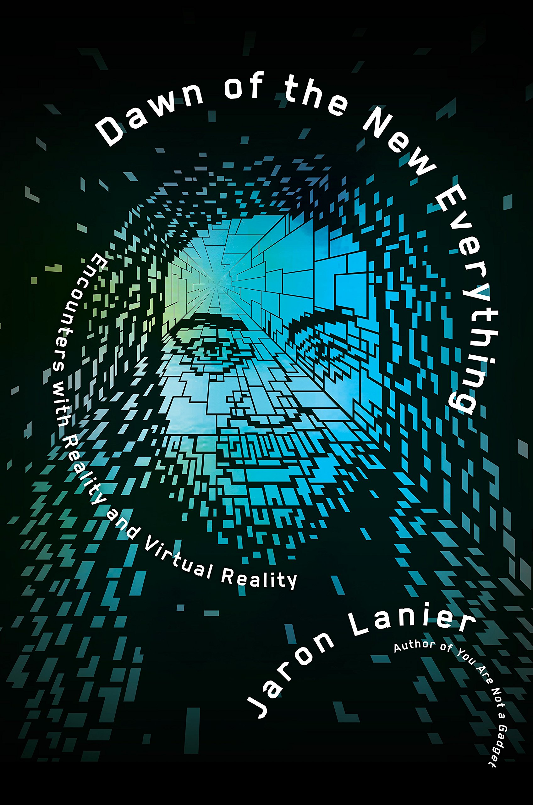

Mi estantería
Me encanta leer, pero algunas veces es difícil encontrar el tiempo necesario para hacerlo. A continuación, se encuentran algunos libros que he leído recientemente o planeo leer pronto.

Steve Jobs
Walter Isaacson

Ten Arguments for Deleting Your Social Media Accounts Right Now
Jaron Lanier

The Anxious Generation
Jonathan Heidt
An Ugly Truth
Sheera Frenkel, Cecilia King

Ultra Processed People
Chris van Tulleken

Dawn of the New Everything
Jaron Lanier